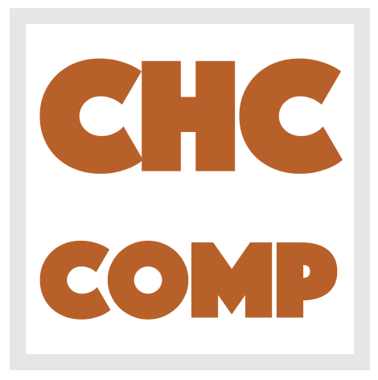

|  |
Constrained Horn Clauses (CHC) is a fragment of First Order Logic (FOL) that is sufficiently expressive to describe many verification, inference, and synthesis problems including inductive invariant inference, model checking of safety properties, inference of procedure summaries, regression verification, and sequential equivalence. The CHC competition (CHC-COMP) will compare state-of-the-art tools for CHC solving with respect to performance and effectiveness on a set of publicly available benchmarks. The winners among participating solvers are recognized by measuring the number of correctly solved benchmarks as well as the runtime. CHC-COMP 2025 was associated with the Workshop on Horn-Clause Verification and Synthesis (HCVS 2025). |
LIA-Lin-Arrays) Notes on result tables and plots:
Disclaimer: Results that are inconsistent across tools are currently omitted. This means that some tools miss out on some correct points and some are not punished for giving wrong results, but it is not always clear what is the ground truth, which we will fix in the future.
The competition benchmarks were selected among the benchmarks available on Github. The format of the benchmarks is described here; a detailed description of the benchmark selection process can be found in CHC-COMP 2022: Competition Report.
The following tracks were evaluated at CHC-COMP 2025:
| LIA-Lin: | Linear Integer Arithmetic, linear clauses | ||
| LIA-Nonlin: | Linear Integer Arithmetic, nonlinear clauses | ||
| LIA-Lin-Arrays: | Linear Integer Arithmetic + Arrays, linear clauses | ||
| LIA-Nonlin-Arrays: | Linear Integer Arithmetic + Arrays, nonlinear clauses | ||
| ADT-LIA: | Linear Integer Arithmetic + non-recursive Algebraic data-types, nonlinear clauses | ||
| ADT-LIA-Arrays: | Algebraic data-types + Arrays + Linear Integer Arithmetic, nonlinear clauses | ||
| LRA: | Linear Real Arithmetic | ||
| BV: | Bitvectors |
In addition to the theories listed in the track names, benchmarks can also use the Bool theory.
sat models checked independently.
Gidon Ernst, LMU Munich, Germany
Jose F. Morales, IMDEA Software Institute, Spain
Last updated: {{site.time}}